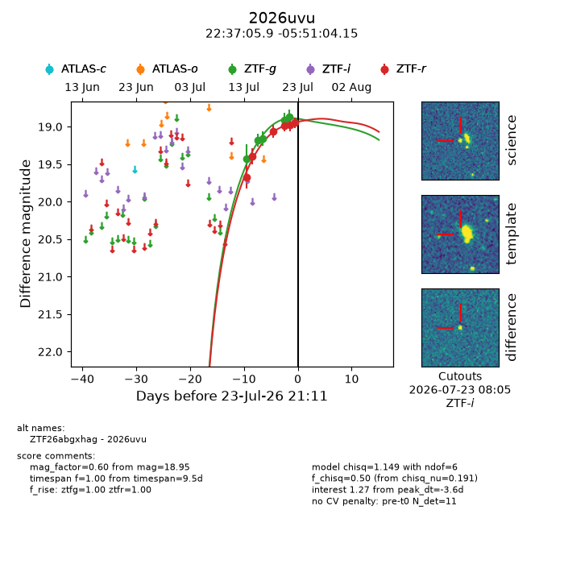
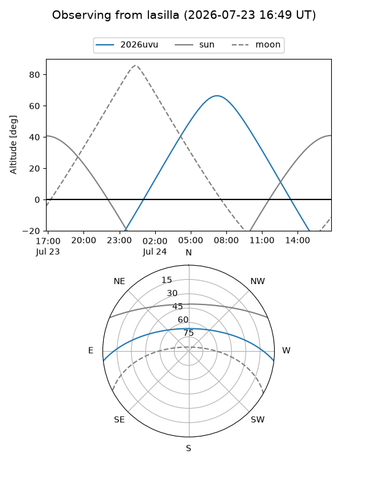
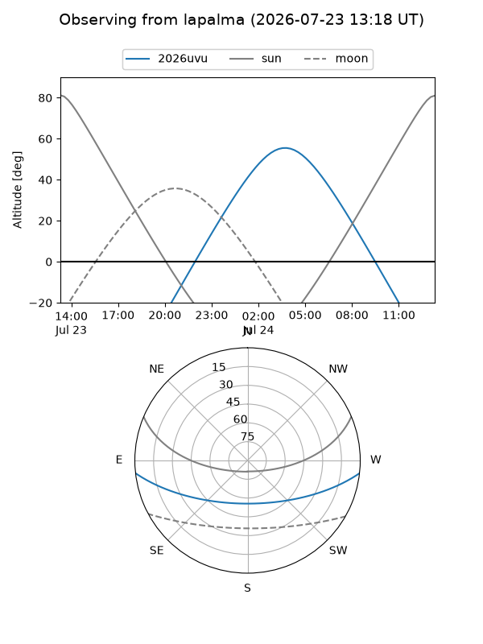
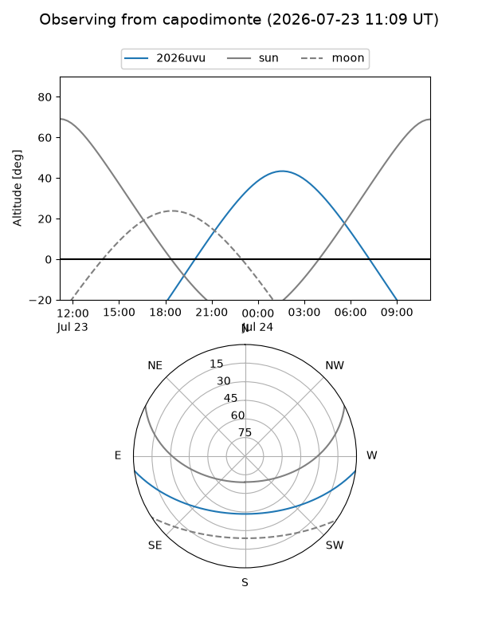
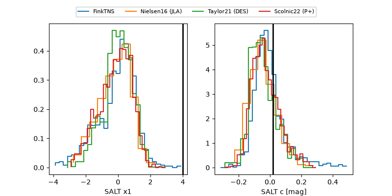

2026uvu
Target 2026uvu at 2026-07-23 21:14
Aliases and brokers:
FINK-ZTF: ztf.fink-portal.org/ZTF26abgxhag
Lasair-ZTF: lasair-ztf.lsst.ac.uk/objects/ZTF26abgxhag
ALeRCE-ZTF: alerce.online/object/ZTF26abgxhag
YSE-PZ: ziggy.ucolick.org/yse/transient_detail/2026uvu
TNS name: wis-tns.org/object/2026uvu
Direct TNS query: direct search
alt names
ZTF26abgxhag (ztf,fink_ztf)
2026uvu (tns,yse)
Coordinates:
equatorial (ra, dec) = 339.2745,-5.85115
equatorial (HMS+DMS) = 22:37:05.88,-05:51:04.15
galactic (l, b) = (60.4887,-51.63210)
Flags:
TNS type: nan
peak dt: -3.6
Photometry:
last ztfg=18.86, ztfr=18.95
5 ztfg, 6 ztfr detections
Lightcurve

Visibility



Additional plots
